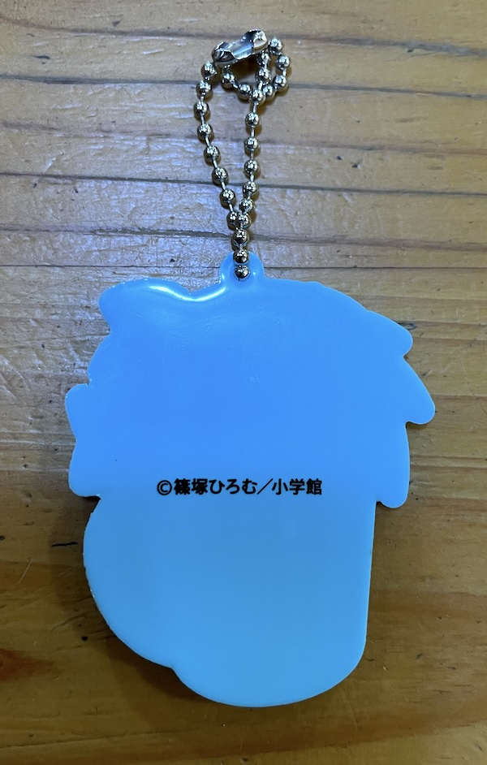
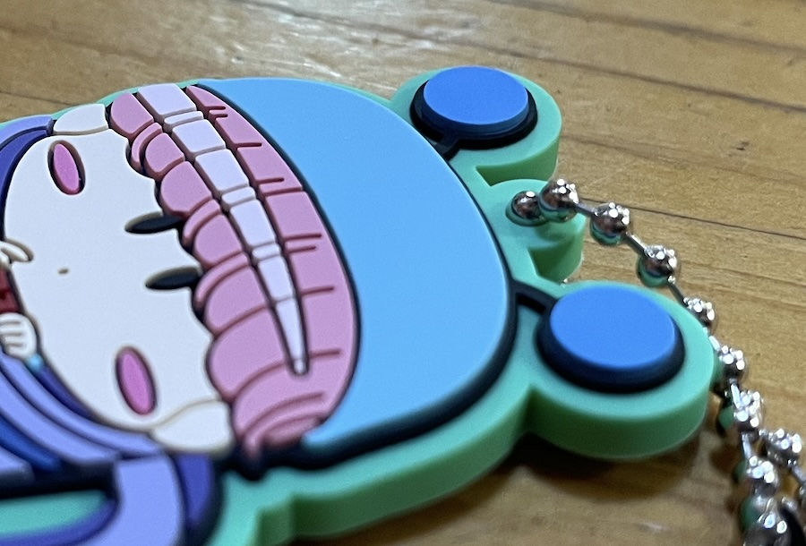
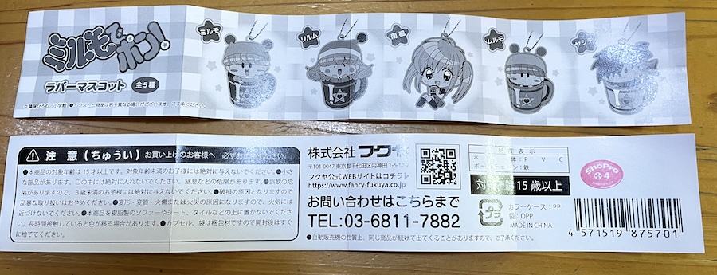
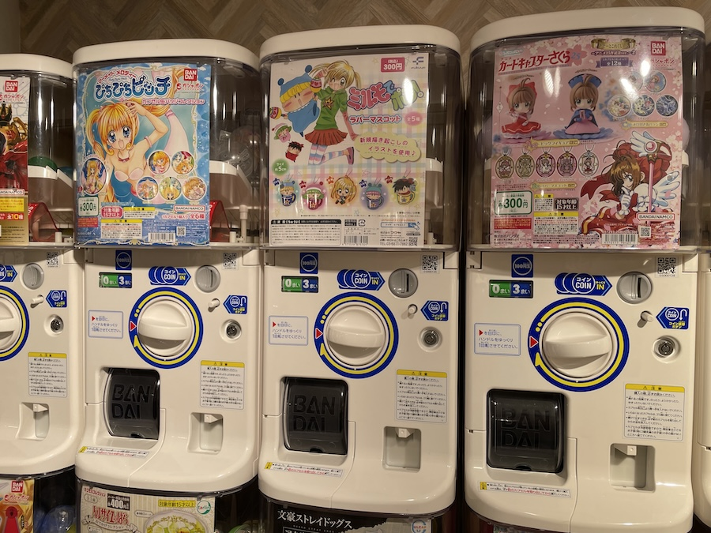
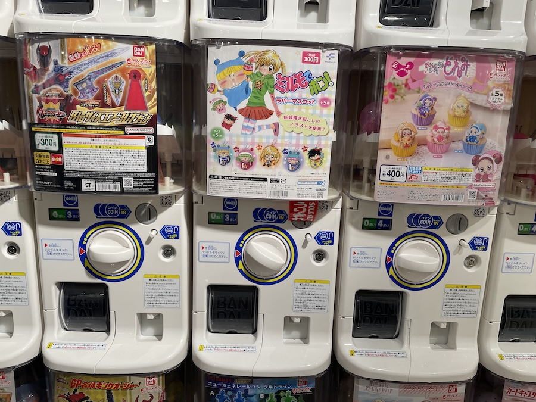

2023年9月に株式会社フクヤさんより『ミルモでポン!！ ラバーマスコット 全５種』が発売されました！
１個３００円でのガチャガチャ販売ですが、ガチャガチャのミルモグッズは２００５年の頃以来かな。
令和のガチャガチャコーナーにミルモが登場するニュースに、ミルモファンの間ではものすごく盛り上がりました(^^)
私の方は、あらかじめ楽天市場でフルコンプセットを予約注文してゲットしました。
実際に手に取ってみると、さすが令和の時代のガチャ商品だけあって、細部まで描かれたラバーマスコットのクオリティの高さに感激！
かつてミルモのガチャがあった２０００年代にはこれほどクオリティの高い商品はなかったような気がします(^◇^;)
以降では、我が家のラバーマスコットたちを写真で紹介いたします。
全５種を並べてみました。
あのヤシチでさえもこのかわいさ！！＞＜

ラバーマスコットの裏側はこんな感じです。

私は特にムルモの触覚の立体感が気に入っています(^^)
妖精たちの小さな手も見事なまでにきれいに描かれていますね。

添付のリーフレットです。

９月２８日のガチャガチャの森 新宿サブナード店にて。
この一画だけ２０００年代になっていますね(^◇^;)
この時は閉店間際で回すことができず。。。そして翌日には売り切れとなっていました。

１０月４日に再度同じお店を訪れたら、少し場所を変えてミルモのガチャが置かれていました。
が、またもや売り切れ・・・(T-T)
X（旧ツイッター）でもあちこちのお店で売り切れとなっていたらしく、かなり多くの方がミルモのラバーマスコットをゲットしたのだと思います。
アニメ放送から２０年経った今でもミルモのこの人気の高さ！
これからもいろんなグッズを期待したくなりますね。
次はかわいい妖精のぬいぐるみをぜひお願いしたいです！
🌟発売商品情報🌟
— 【公式】フクヤ｜プライズ・キャラ福くじ (@fancy_fukuya) August 8, 2023
「#篠塚ひろむ」先生による
名作「ミルモでポン!」から
ラバーマスコット(全5種）
がカプセルトイで登場✨
9月下旬ごろから
一部取り扱い店舗にて
順次展開予定☕
✨🍫詳しくはこちら🍫✨https://t.co/MPkUYsYRJt#ミルモ #ちゃお pic.twitter.com/7qwvu9LS8c
(2023/10/14)